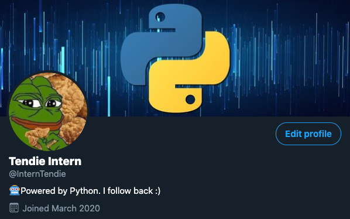

MY AUTOMATED TWITTER ACCOUNT
**focused on the stock market**
Functions
- Reply to Mentions
- Tweet
- Follow Users
- Search Keywords in Tweets
- Favorite Tweets
- Send Direct Messages
- Reply to Direct Messages
- Scrape Tweets for Sentiment Analysis
Latest Tweet
 Reading #204 => Twitter's sentiment of the stock market is bullish with a reading of
145. This is the highest reading to
date.
Reading #204 => Twitter's sentiment of the stock market is bullish with a reading of
145. This is the highest reading to
date.
Account Data
Followers: 1441
Tweets: 387
Tweets Scraped: 10000
Tweets Favorited: 20000
Create Your Own
Comprehensive Instructions Here